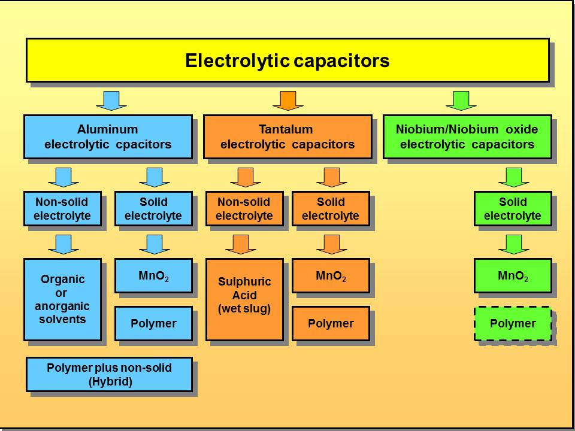

Time a rising voltage with a capacitor
Reuse the voltage divider and add a capacitor and a reset link. Measure a delay you can see on a plain multimeter.
Keep the divider and add only two components
Keep the 5 V supply, both 68 kΩ resistors and the multimeter from P184. Add one 100 µF, 10 V radial aluminium electrolytic, one 1 kΩ resistor and three jumpers. Use a phone stopwatch. See the shared parts list with buying links.



Watch. Watch for the point where the rising curve reaches about 63% of its eventual change. You will read the slower curve with a meter. Keysight Labs · How to Measure the Time Constant with an Oscilloscope.
Wire the delay and reset
+5 V ── 68 kΩ ── SENSE ── 68 kΩ ── GND
├──── + C1 100 µF − ── GND
└──── 1 kΩ ── RESET link ── GND- Switch off and unplug. The two 68 kΩ resistors still meet on strip 16. Put C1 positive in c16 and the stripe-marked negative in c20. Jumper a20 to the GND rail. Use a short jumper if the capacitor leads do not reach four pitches without strain.
- Fit 1 kΩ from d16 to d21. Fit the removable reset jumper from a21 to GND. Clip or hold the black probe on GND and red on e16. Select DC volts.
- Switch on with RESET fitted. Wait for the meter to settle below 0.15 V. Remove only the insulated reset jumper at a21 and start the stopwatch. The resistor remains in the circuit when RESET connects. Refit the jumper to return near zero.
- Repeat it a few times. If you have two hands free, film the meter and clock, then pause the recording while you fill in the table. Put the jumper back for at least two seconds between runs.
| Time since opening RESET | Nominal SENSE at 5 V | Your reading |
|---|---|---|
| Before opening | 0.07 V | ______ |
| 1 s | 0.69 V | ______ |
| 3 s | 1.50 V | ______ |
| 5 s | 1.94 V | ______ |
| 20 s | about 2.5 V | ______ |
The two 68 kΩ resistors look like 34 kΩ to the charging capacitor when the 5 V source is treated as fixed. This gives τ ≈ 34,000 × 0.000100 = 3.4 seconds. The final voltage is half the supply, so one time constant takes SENSE about 63% of the way from its starting voltage to 2.5 V. With RESET closed, the 1 kΩ gives a much faster discharge. Theory · Capacitors and RC time.
Pass. SENSE starts below 0.15 V, climbs smoothly through 1 V, settles roughly 1.8–2.75 V at 20 seconds, and returns below 0.15 V when reset. Capacitance tolerance, capacitor leakage and meter speed can shift the intermediate times. If the voltage jumps as soon as you open RESET, check C1’s two strips and ground jumper. If it stays near zero, check the reset connection is open.
The table is calculated for nominal parts. Keep your observed values for the comparator exercise.
Next · Make a chip decide whether the voltage is high